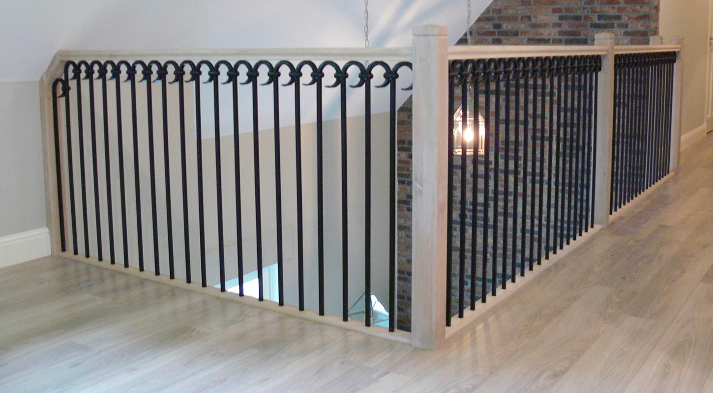

Licht en ruimtelijk
Open trap
Bij een open trap zitten er geen stootborden tussen de treden. Het licht valt erdoorheen, zodat de trap licht oogt en de ruimte groter lijkt. Past goed bij een moderne of strakke inrichting.

Maatwerk trappenbouw
Wij maken een trap die past bij uw persoonlijke smaak en interieur: modern, klassiek en in diverse houtsoorten. Ook als uw huidige trap alleen een nieuwe uitstraling nodig heeft.
Grosfeld maatwerk trappen
Een trap is meer dan een verbinding naar een andere verdieping. Het is uw meest gebruikte meubelstuk in huis, en het bepaalt voor een groot deel hoe de ruimte eruitziet waar hij staat.
Daarom maken wij elke trap op maat. Wij kijken naar de ruimte, naar uw interieur en naar hoe u de trap gebruikt. Zo krijgt u een trap die klopt: in maat, in stijl en in gevoel.
Soorten trappen
Elke ruimte vraagt om een andere oplossing. Hieronder ziet u de bekendste vormen. Wij helpen u kiezen.
Bij een open trap zitten er geen stootborden tussen de treden. Het licht valt erdoorheen, zodat de trap licht oogt en de ruimte groter lijkt. Past goed bij een moderne of strakke inrichting.
Een dichte trap heeft stootborden tussen de treden. Dat geeft een rustig en gesloten geheel. De ruimte onder de trap kunt u goed benutten, bijvoorbeeld voor een kast.
De treden draaien rond een middenpaal, de spil. Zo neemt de trap weinig vloerruimte in. Handig waar weinig plek is, bijvoorbeeld naar een vide, een mezzanine of de zolder.
Een kwarttrap maakt onderaan of bovenaan een kwartslag, een draai van 90 graden. Zo past de trap mooi in een hoek of langs twee wanden, zonder dat u een grote rechte lengte nodig heeft.
Bij deze trap hoort een vlakke overloop of een bordes, halverwege of bovenaan. Daar kunt u even stilstaan of van richting veranderen. De trap en de afwerking van de overloop vormen samen één geheel.
Advies
Dat hangt af van de ruimte, uw smaak en hoe u de trap gebruikt. Wij komen graag kijken en denken met u mee.
Materialen en afwerking
Houtsoort, kleur en materiaal bepalen samen de uitstraling van uw trap. Wij adviseren wat past bij uw interieur.
Houtsoorten
Wij maken trappen in diverse houtsoorten. Elke houtsoort heeft een eigen kleur, tekening en karakter.
Eiken wordt veel gekozen: het is sterk, gaat lang mee en heeft een duidelijke, levendige nerf. Andere houtsoorten geven een lichtere, egalere of juist warmere uitstraling. Welke houtsoort het beste past, hangt af van uw interieur en van hoe intensief de trap gebruikt wordt.
Kleur
Houdt u van een rustig, licht beeld of juist van een stoere, donkere trap? Een houten trap kan op kleur worden gespoten.
Een bekende combinatie is een wit gespoten trap met houten treden. U houdt dan de warmte van hout waar u loopt, en de trap valt rustig weg in een lichte hal. De ruimte onder de trap kan worden benut, bijvoorbeeld met een kast op maat.
Materiaalcombinaties
Hout combineren wij graag met andere materialen. Zo krijgt uw trap precies de uitstraling die u zoekt, van licht en modern tot klassiek en sierlijk.
Veilig
Natuurlijk zorgen wij ervoor dat de trappen voldoen aan het bouwbesluit. Daarin staan regels voor een veilige trap, bijvoorbeeld voor de maten van de treden, de vrije hoogte boven de trap en de leuning en het hekwerk.
Omdat wij elke trap op maat maken, nemen wij die regels vanaf het eerste ontwerp mee. Zo loopt de trap prettig en veilig, en past hij toch precies in uw ruimte.
Traprenovatie
Is uw trap compleet toe aan een vernieuwing, dan kan een traprenovatie voldoende zijn. Ook hier zijn wij in thuis.
Bij een traprenovatie blijft de bestaande trap staan, als de constructie nog goed is. De trap krijgt wel een nieuwe uitstraling. Wat er nodig is, hangt af van uw trap en uw wensen, bijvoorbeeld:
Of renoveren of een nieuwe trap het beste is, bekijken wij samen met u.
Werkwijze
Wij bespreken uw wensen en geven eerlijk advies over houtsoort, stijl en mogelijkheden.
Wij meten alles nauwkeurig in. Daarna ontvangt u een offerte.
Uw trap wordt met zorg op maat gemaakt, passend bij uw ruimte en interieur.
Wij plaatsen de trap en werken alles netjes af.
Ons werk
Een selectie van door ons gemaakte trappen. Klik op een foto om die groter te bekijken.
Ruimtegebrek? Met een vaste trap naar de zolder creëert u snel extra ruimte. Wij regelen alles van A tot Z, met één aanspreekpunt. Bekijk het complete pakket
Veelgestelde vragen
Wij maken trappen op maat in elke stijl: modern, strak en stoer tot landelijk. Denk aan open en dichte trappen, wenteltrappen, kwarttrappen en trappen met een overloop. Welke vorm het beste past, hangt af van uw ruimte en wensen.
Een open trap heeft geen stootborden tussen de treden, zodat er licht doorheen valt. Een dichte trap heeft die stootborden wel. Dat geeft een rustiger, gesloten beeld, en de ruimte onder de trap is goed te gebruiken, bijvoorbeeld voor een kast.
Wij werken met diverse houtsoorten. De trap kan ook op kleur worden gespoten. Daarnaast combineren wij hout graag met smeedijzer, rvs of glas. Wij adviseren u graag welke keuze past bij uw interieur.
Ja. Wij zorgen ervoor dat de trappen voldoen aan het bouwbesluit.
Niet altijd. Als de constructie nog goed is, kan een traprenovatie voldoende zijn. De trap krijgt dan een nieuwe uitstraling. Wij bekijken samen met u wat in uw situatie het beste is.
Ja. Wij kunnen een compleet pakket aanbieden, van constructieberekening en trapgat tot de trap zelf en de afwerking, met één aanspreekpunt. Lees meer op de pagina vaste trap naar de zolder.
Ons werkgebied is voornamelijk Zuidoost Nederland, binnen een straal van 30 km vanuit Weert.
Vul het offerteformulier in, stuur een e-mail naar info@grosfeld-interieurbouw.nl of bel 0495 625272. Wij nemen contact met u op voor een gesprek en een vrijblijvende offerte.

Vertel ons wat u zoekt. Wij nemen contact met u op voor een gesprek en een vrijblijvende offerte.